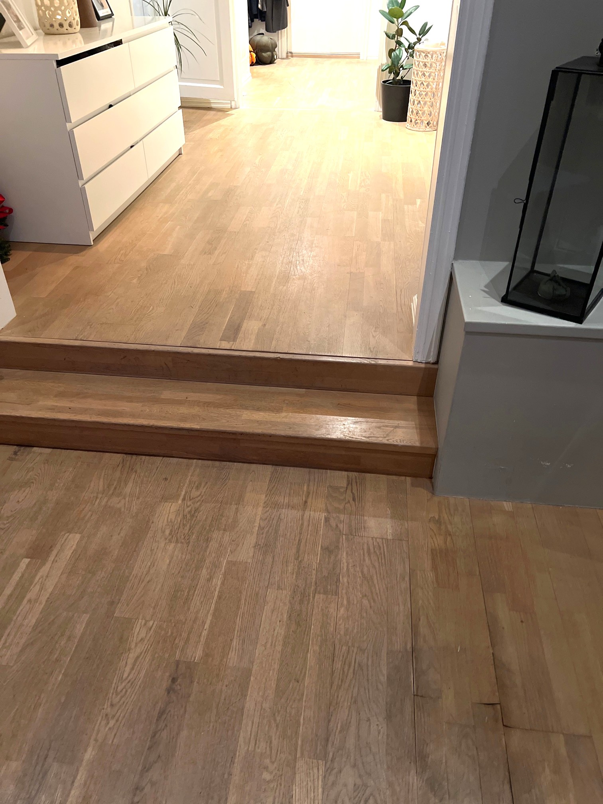
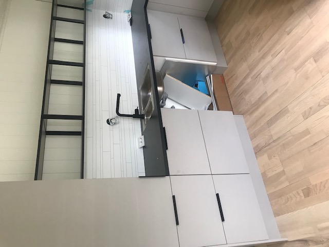
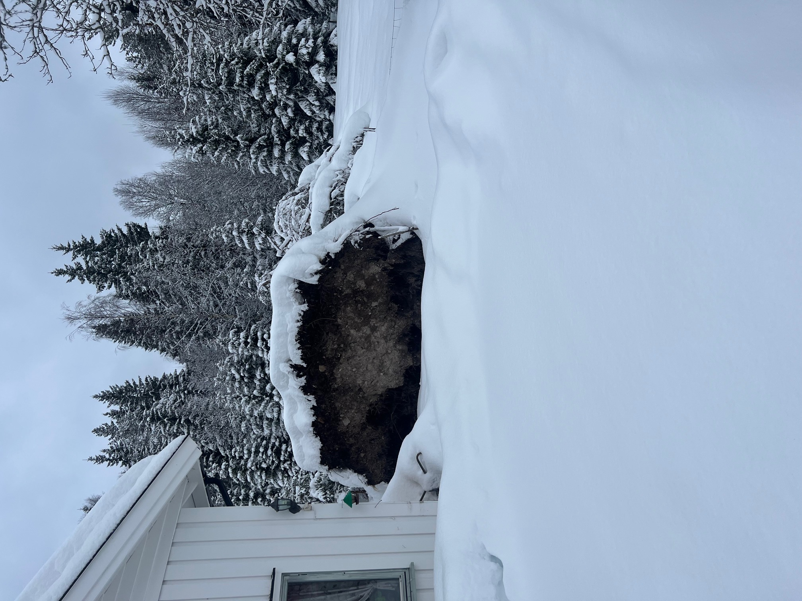
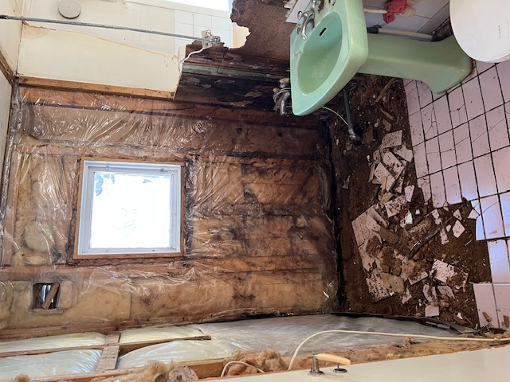
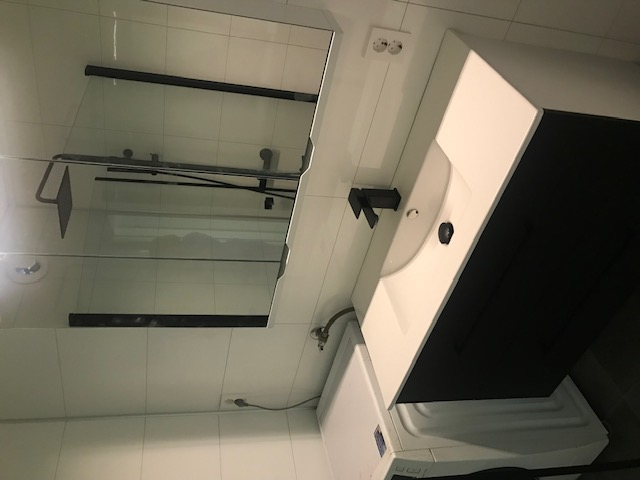
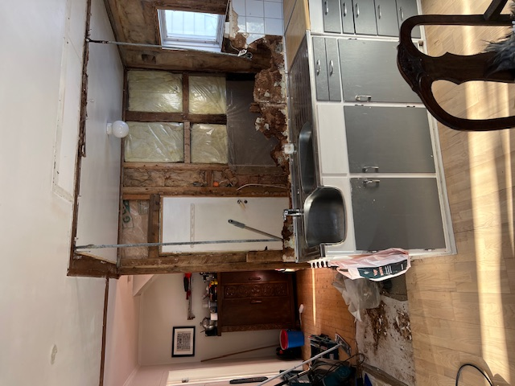

Du sender inn saken med en kort beskrivelse og eventuelle bilder eller dokumenter.
Gratis vurdering — ingen risiko
Fikk du riktig oppgjør etter skaden?
Vi vurderer gratis om forsikringen skal dekke mer — og tar betalt kun hvis vi vinner frem.
★ Anbefalt av 200+ boligeiere
Svar innen 48 timer
Ingen betaling uten utbetaling

Før
Etter
70 000
vannskader meldes i Norge hvert år
60 000 kr
gjennomsnittlig utbedringskostnad
0 kr
betaler du hvis saken ikke fører frem
Slik fungerer det
En erfaren rådgiver går gjennom dokumentasjonen og vurderer potensialet i saken.
Du får svar innen 48 timer på om saken kan følges opp videre.
Du betaler kun dersom saken fører til utbetaling.
Vannskader og andre skader som kan gi rett til høyere utbetaling
En del vannskader og andre skader på bolig eller eiendom blir aldri meldt til forsikringen. Andre ganger gir forsikringsselskapet et oppgjør som er lavere enn det skaden faktisk koster å reparere — uten at du vet at du kan klage.
Forsikringsselskaper behandler ofte lekkasjen og følgeskadene separat. Det betyr at du kan ha krav på erstatning for skader du ikke visste var dekket.
Dette ser vi ofte i saker som gjelder:
- Vannskade som ødelegger parkett, gulv eller vegg
- Lekkasje fra oppvaskmaskin, varmtvannsbereder eller vaskemaskin
- Tre som blåser ned på tomt, terrasse eller tak
- Forsikringsoppgjør som virker for lavt
- Avslag på forsikringskrav du mener burde vært dekket
- Skader som ikke ble meldt inn da de oppstod

Vi vurderer gratis om saken bør følges opp videre.
Når passer tjenesten vår best
Tjenesten passer best i saker der:
- Skaden gjelder bolig eller eiendom
- Skaden oppstod plutselig, som vannlekkasje eller storm
- Forsikringsselskapet har gitt avslag eller lav utbetaling
- Skaden ikke ble meldt, men reparasjonen ble kostbar
- Du har bilder, takst, faktura eller annen dokumentasjon
Mindre skader ligger ofte nær egenandelen i forsikringen. Vi prioriterer derfor normalt saker der kostnaden for å reparere skaden er over 70 000 kroner.
Er du usikker, kan du likevel sende inn saken for en gratis vurdering.
Hva sier kundene våre
Reelle historier fra boligeiere vi har hjulpet.
Forsikringsselskapet tilbød 45 000 kr for parketten. Etter hjelp fra skadekrav.no fikk vi 180 000 kr — mer enn nok til full renovering.
Trodde saken var tapt etter avslaget fra forsikringen. De oppdaget at avslaget ikke var begrunnet riktig, og vi fikk til slutt full dekning.
Oppvaskmaskinen lakk i over ett år før vi oppdaget skaden bak kjøkkeninnredningen. Skadekrav.no hjalp oss å dokumentere saken og vi fikk 95 000 kr.
Før og etter
Se hva riktig oppgjør kan bety for din bolig.
Før

Etter

Før

Etter
Send inn saken
Det tar under 2 minutter å sende inn saken.
Beskriv hva som skjedde, når skaden skjedde og hva du har av bilder eller faktura. Vi svarer normalt innen 48 timer.
Gratis vurdering. Ingen betaling hvis saken ikke fører frem.
Vanlige spørsmål om skade og forsikring
Dekker forsikringen vannskade i gulv og parkett?
Mange vannskader i bolig kan være dekket hvis skaden oppstod plutselig. Forsikringsselskapet behandler ofte selve lekkasjen og følgeskadene som to separate skader — begge kan gi rett til erstatning.
Hva gjør jeg hvis forsikringen har gitt for lav utbetaling?
Hvis oppgjøret er lavere enn kostnaden for å reparere skaden, kan det være grunnlag for å klage. Send inn saken til oss, så vurderer vi gratis om du har krav på mer.
Kan jeg klage på forsikringsoppgjøret?
Ja. Du har rett til å klage på forsikringsoppgjøret. Vi hjelper deg med å vurdere om saken har grunnlag og bistår deg gjennom prosessen — du betaler kun hvis vi lykkes.
Kan jeg sende inn en sak som ikke ble meldt med en gang?
Ja, i noen tilfeller kan saken fortsatt vurderes selv om den ikke ble meldt umiddelbart. Det er særlig aktuelt hvis du har bilder, faktura eller annen dokumentasjon på skaden.
Hvilke saker hjelper skadekrav.no med?
Vi hjelper med saker som gjelder vannskade, stormskade, andre boligskader, for lav utbetaling fra forsikring, og skader som ikke ble meldt inn da de oppstod. Vi prioriterer saker der utbedringskostnaden er over 70 000 kroner.
Hva koster det å bruke skadekrav.no?
Vurderingen er alltid gratis. Hvis vi tar saken videre og får gjennomslag, er vår provisjon 30 prosent av utbetalingen. Får vi ikke gjennomslag, betaler du ingenting.